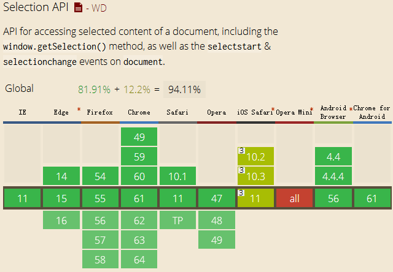
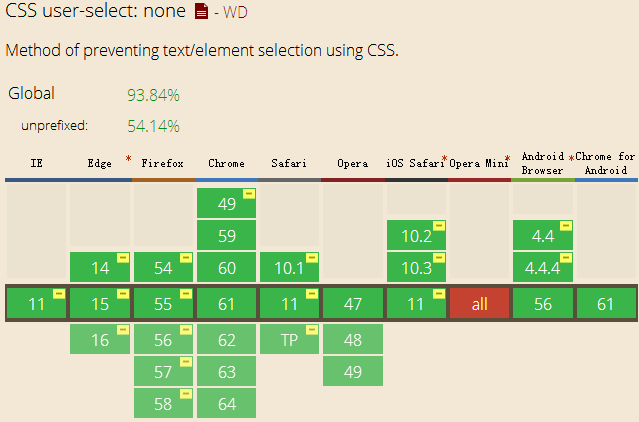
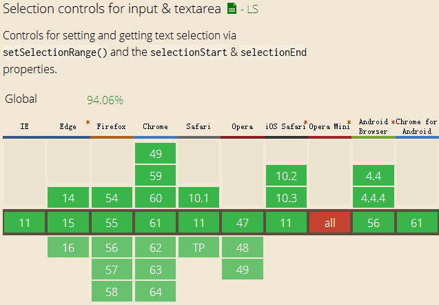
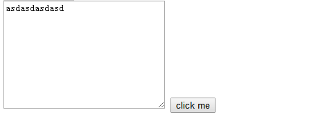

Wow, to begin with, if you have already known the "onselectstart", that's fine. But do you know how to deal with the compatibility of mobile devices? How to cancel the text selection of input button and textarea, and how to let its compatibility be supported by IE8-?
If you know everything...emmmm, that's a question, why are you still staying here?! Just go and play football! If you don't know, that's also fine. Because it means I can speak carelessly... Haa, ok just a joke, every cases and examples in my blogs is tested carefully by myself, just trust me.
1. Cancel user selection in Div
Yes, someone maybe know the "onselectstart" event, it can help us ahchieve this effect, let's see an example:
<div onselectstart="return false;">Today is a sunny day.></div>
Ok, you can copy this case into your editor, and test it. The text in Div cannot be selected.
Let's see its compatibility:

Ok, every is fine except iOS Safari. It support "window.getSelection()" method, but do not support "onselectstart" event! So how to do? Wow, you might remember "user-select:none;". Yes! That's great. You can put this in CSS style, let's see its compatibility:

Until now, every is totally fine(We don't care about Opera mini).
Maybe you will ask can we use "window.getSelection()" method to achieve this effect? It's a good idea. The answer is YES! Let's see an example, and this case is also supported by IE8-.
function cancelSelect(){
window.getSelection ? window.getSelection().removeAllRanges() : document.selection.empty();
}
document.onmouseup = cancelSelect;
The "winodw.getSelection()" method is supported by IE9+, so for IE8-, we have to use "document.selection". These two method have the same effect, when the user select any text in any place of document, they will get the text. We can use the following code to get the selected text in anywhere.
function getSelect(){
var txt = window.getSelection?window.getSelection():document.selection.createRange().text;
alert(txt);
}
document.onmouseup = getSelect;
Ok, those are some methods to cancel text selection of Div. Next, let's see the case in textarea.
2. Cancel user selection in Input/Textarea
First, have you ever considered can we use "onselectstart" method? Of course not! It doesn't work, otherwise, I wouldn't discuss this situation. Ok, let's begin.
There is a "select" event in Input/Textarea. Maybe you have heared it, we can get the selected text by using it. Let's see an example.
var textarea = document.querySelector("textarea");
textarea.addEventListener("select", function(event){
alert(this.value.substring(this.selectionStart, this.selectionEnd));
}, false);
Ok, you can see two attributes —— "selectionStart" and "selectionEnd". They belongs to Input/Textarea, from their names you will know that they represent the start index and end index of selected text.
Let's see the compatibility:

I have to mention here those methods can be supported by IE9+, in the IE8-, unluckily, we have to use "document.selection.createRange().text" method.
However, we have to use them in the events of Input/Textarea. But what we should do if we want to click a button and select some text in a textarea automatically? Like this:

In this case I click the button, the computer should select the first three characters automatically. How to achieve it? Do we have some easy methods? YES! HTML5 gives us a "setSelectionRange()" method which we can use besides the events of Input/Textarea.
input.addEventListener("click", function(event){
textarea.setSelectionRange(0, 3);
textarea.focus(); // must add
}, false);
The above code shows how to use "setSelectionRange()" method. We should put the start index and end index into this method. And "focus()" method is required. Don't forget!
Ok, until now, we know how to get the selected text of Input/Textarea and how to use "select" event. That's very important! Next let's begin to cancal user selection.
Maybe you will think:
we can do like this: when user is selecting some text, we can set "selectionStart" and "selectionStart" to be the same value or set "setSelectionRange()" method to be zero in the "select" event.
Ye, you are smart. However, it doesn't work very well, actually it only work well in the first time. After that, our mouse cursor is freezed. What is "freezed"? It means we cannot change our mouse cursor in the textarea, it stay, it fixed. How could it be?
Let's back to the sentence above, all words are fine except the last two words. We cannot use those method in "select" event, because it prevents our next step! So we should put them in "mouseup" event!! That's work!
textarea.addEventListener("mouseup", function(event){
// if user selects some texts
if (this.value.substring(this.selectionStart, this.selectionEnd).length > 0){
this.setSelectionRange(this.selectionEnd, this.selectionEnd); // it works well
this.selectionStart = this.selectionEnd; // it also works well
}
}, false);
You can also test it, I write a example below:
(That's all)